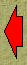
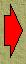

В части 1) задачи_№1 главное:

Решаем часть 1) Задачи_№1.
Покажем последовательность наших действий с помощью следующего слайд-шоу:
|  |

|
 |
|
В части 1) задачи_№1 главное: Решаем часть 1) Задачи_№1. Покажем последовательность наших действий с помощью следующего слайд-шоу:
|